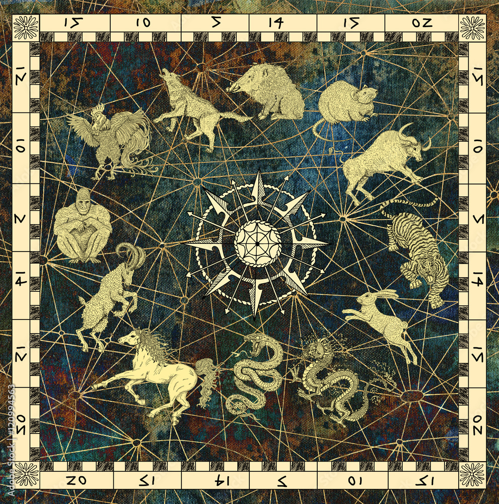

The Chinese Zodiac is unique in its own right. It plays a central role in Chinese culture and is celebrated by the Chinese community on the Chinese New Year annually. There are 12 signs representing certain birth year. The signs are the rabbit, the dragon, the snake, the horse the goat, the monkey, the rooster, the dog. the pig, the rat, the ox, and the tiger. The cycle of the zodiac repeats every 12 years.
The most common story associated with the birth of the Chinese zodiac is the legend of the Jade Emperor's Race. In this race, the emperor would decide on which animal was lucky and hence, the first place winner would be the first animal onn the zodiac sign, which happened to be the rat. Then the order of the zodiac corresponded with the order of which animal finished the race.
The Chinese tradition celebrates the New Year around February with many festive traditions. There are special deserts for everyone to enjoy, a dragon dance show, and relatives give out lucky red cards with money to their loved
